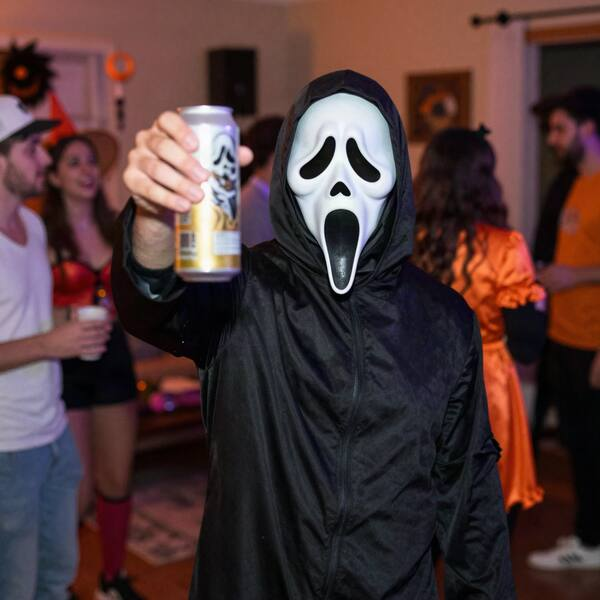
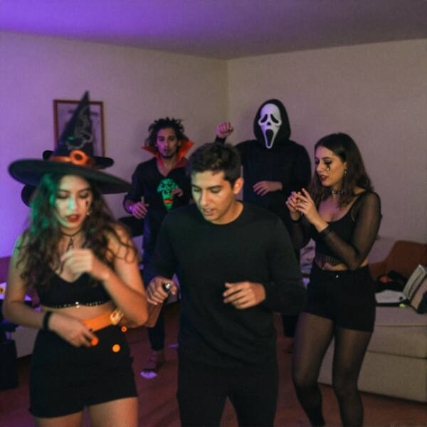
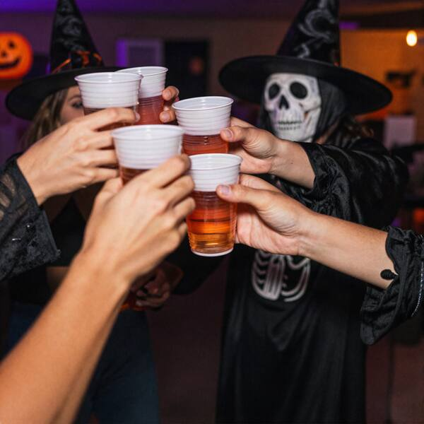
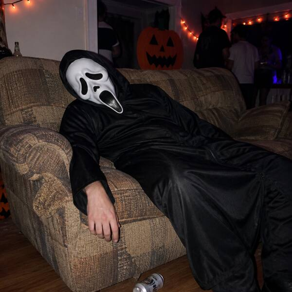

Evidencia digital · aportada por M. VidalInstagram @maca.vidal · historias del viernes 30-10
E21Fiesta de Halloween en la casa de Maca
maca.vidal

Llegó Scream (@toto.lagos)22:47
maca.vidal

Reguetón y terror23:16
maca.vidal

Salud por la Noche de Brujas23:58
maca.vidal

Scream cayó01:30
 Open CaseEl Chupacabras de Labranza
Open CaseEl Chupacabras de Labranza